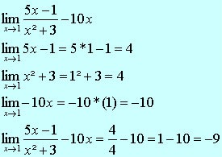

Dentro das aplicações matemáticas, A aplicação do limite tem como objetivo determinar o comportamento de uma função, conforme ela se aproxima de outros determinados valores.
A aplicação de limites, nos ajuda a compreender diferentes situações envolvendo funções, vendo através de comportamento em: Pontos mínimos e máximos, intersecção, entre outros.
Nos exemplos a seguir, vemos os primeiros passos no cálculo 1 e em limites, utilizando a técnica de substituição, faremos: f (x) = 4x + 1 com o valor de X tendendo a 2.
Então, nesse primeiro exemplo, temos que o limite, quando X tende a 2, é igual a 9.
Exemplo 2:
No exemplo a seguir, iremos determinar o limite da função f (x) = x² – 5x + 3, enquanto X tende a 4, nesse caso, vamos aplicar a regra do limite das somas e a soma desses limites, então, iremos calcular o limite de cada monômio para depois, somá-los.
Exemplo 3:
Como último exemplo, temos a função
enquanto o limite de X se aproxima de 1.
As derivadas, quando existentes, determinam a inclinação de uma reta tangente de uma função f (X), nesse tópico, veremos as principais regras de derivação com exemplos de demonstração.
⦁ Se f (x) = a, então f ' (x) = 0.
⦁ Se f (x) = ax, então f ' (x) = a.
⦁ (Regra do tombo) Se f (x) = xa, então f ' (x) = a·xa – 1.
Como exemplo para a Regra do tombo, calcularemos f (x) = 3x4:
f ' (x) = 4·3x4 – 1
f ' (x) = 12x3
⦁ (Derivada da soma) [f (x) + g (x)]' = f ' (x) + g' (x).
A derivada de uma soma de duas funções f(x) e g(x) é a soma das derivadas de f(x) e g(x).
Como exemplo, seja h(x) = 3x + 5x²:
h'(x) = 3 + 10x.
⦁ Regra do produto
A regra do produto diz que a derivada de um produto de duas funções é a primeira função vezes a derivada da segunda função mais a segunda vezes a derivada da primeira função.
Exemplo:
Como há produto de uma multiplicação e Seno, usaremos a regra do produto.
⦁ Regra do quociente
a Regra do Quociente diz que a derivada de um quociente é o denominador vezes a derivada do numerador menos o numerador vezes a derivada do denominador, todos divididos pelo quadrado do denominador.